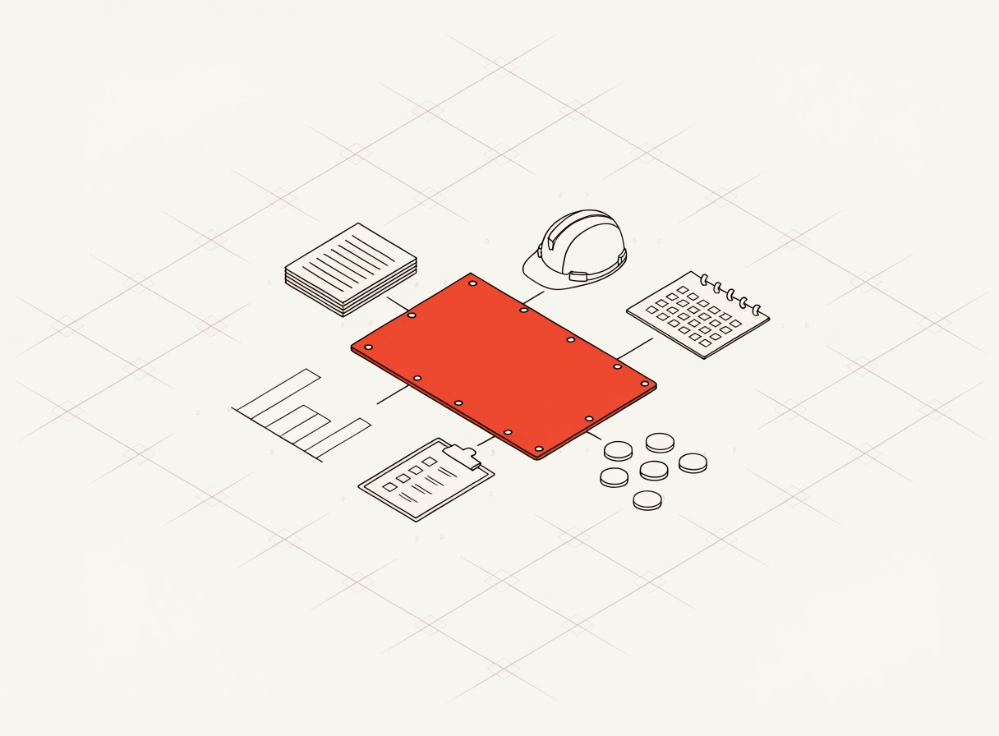
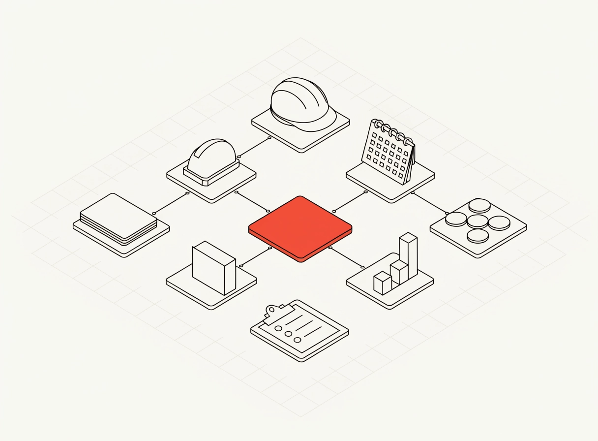
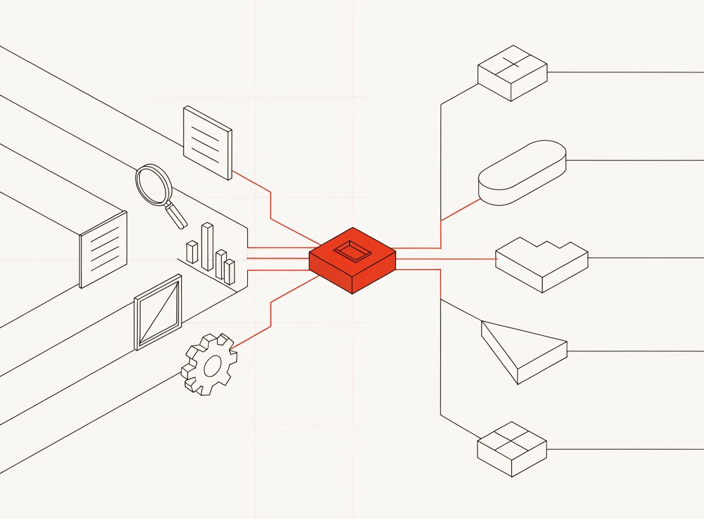
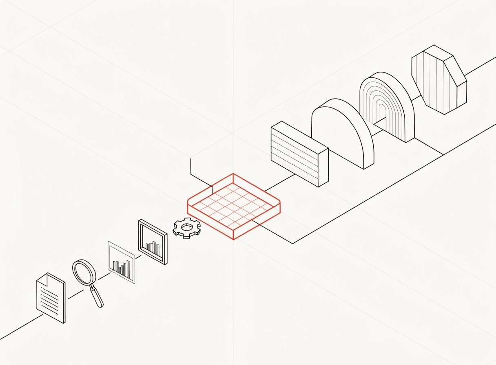
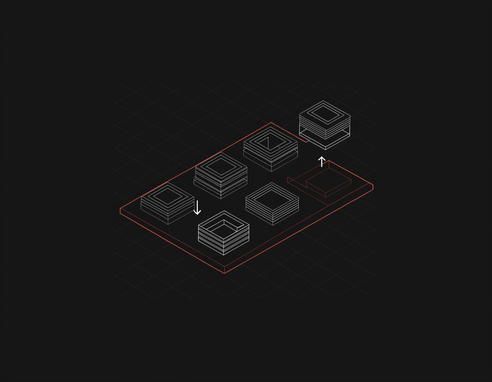
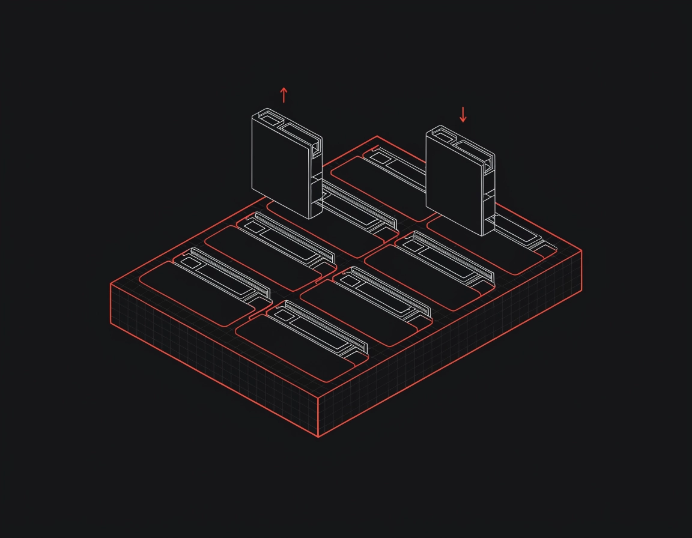
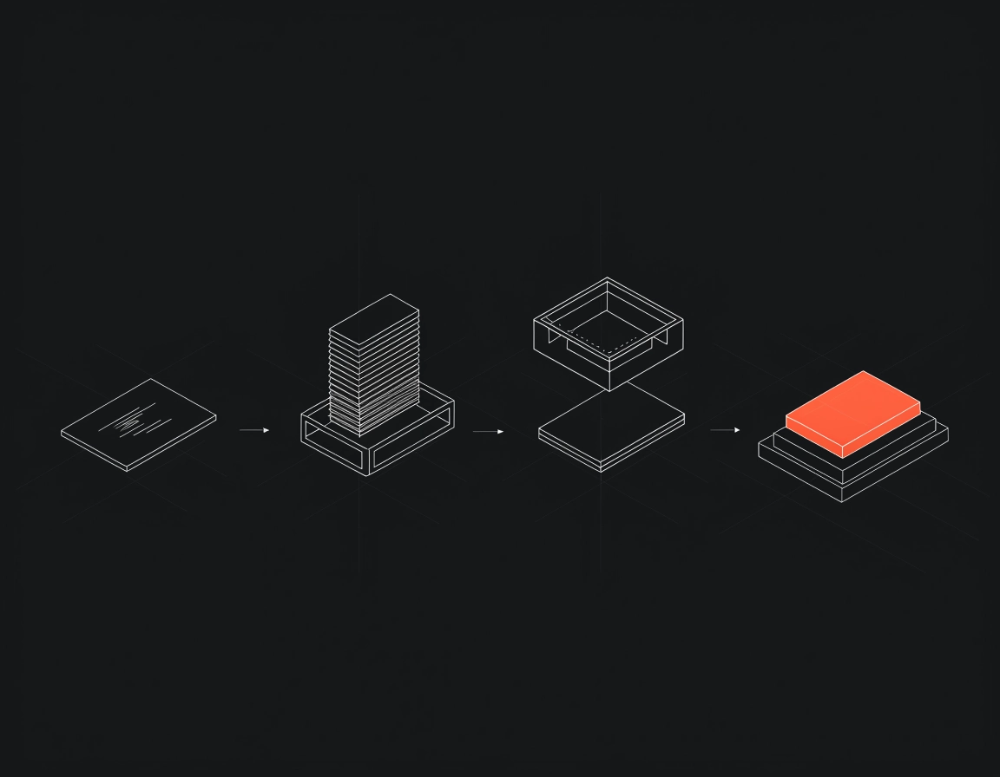
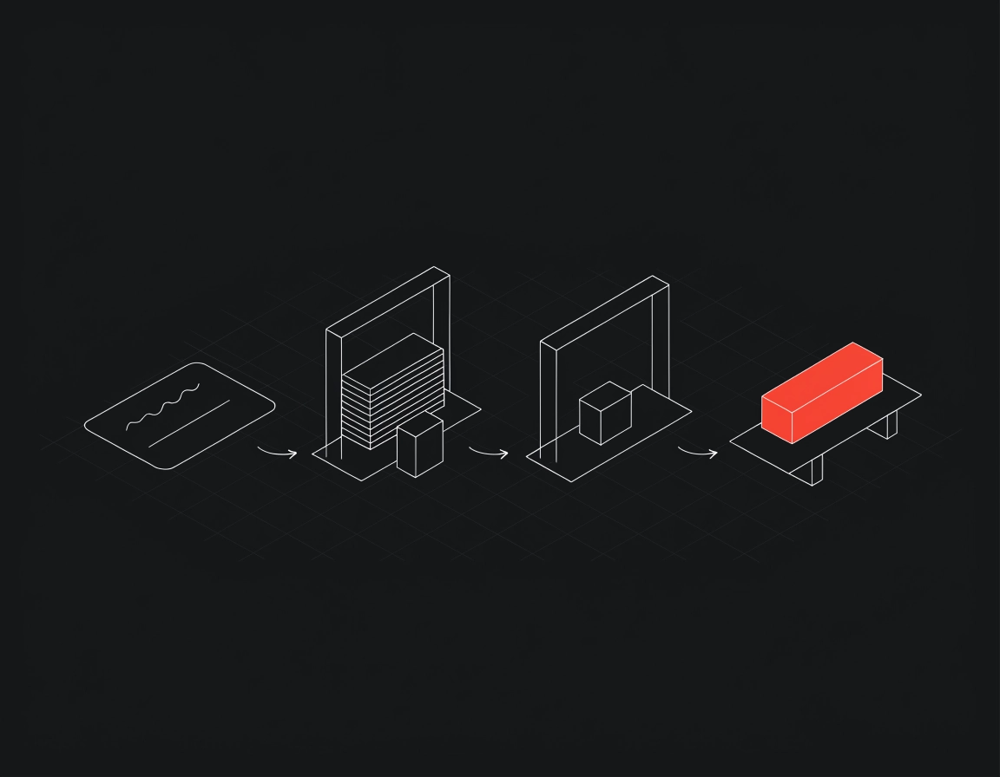
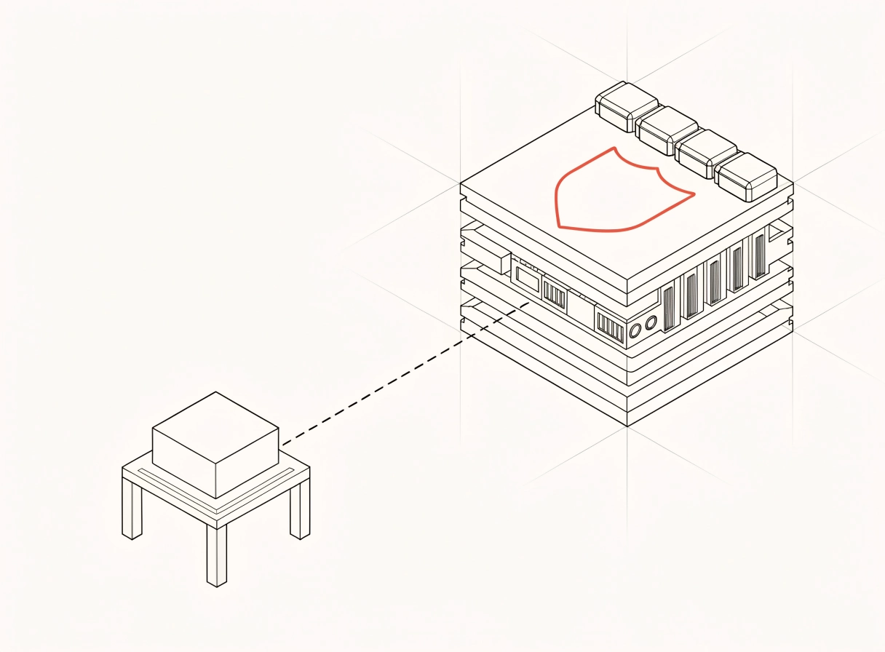
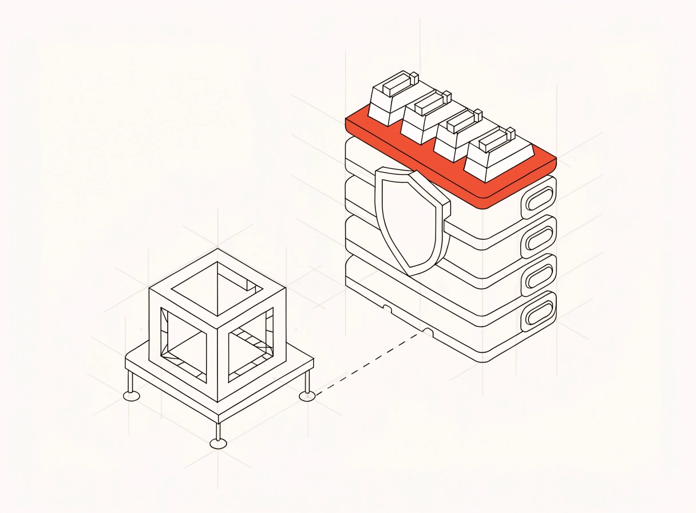

Направление A «технический чертёж» одобрено. Ниже — кадры для четырёх мест на страницах продуктов. У каждого места два варианта. На страницы они ещё не поставлены — жду вашего выбора или комментариев.
Экраны интерфейса (герои, Product proof, Agent Studio) не трогаю: бриф клиента требует там реальный UI. Для тёмных секций — тот же стиль, светлыми линиями на #121212.
Сейчас справа пустое место под фото. Вместо фото — иллюстрация «всё про проект вокруг одной платформы»: она прямо иллюстрирует фразу секции «connects the operational parts of a project in one environment». Тот же сюжет, что в полосе Products, — можно поставить тот же кадр или второй вариант.


Сейчас только текст и теги. Бриф прямо просит: «покажите, как разные типы работы входят в NOVAlab и направляются к нужной возможности». Секция станет рядом «текст слева, иллюстрация справа».


Тёмная секция, сейчас справа абстрактные полукруги. Сюжет: платформа стоит, модули-модели вынимаются и заменяются.


Тёмная секция, сейчас рядом с шагами абстрактные полукруги. Сюжет: Describe → Build → Review → Deploy, готовый пакет красным.


«We understand the decisions that come after the prototype.» Сейчас текст и теги занимают 940 px из 1345, справа пусто. Секция станет рядом «текст слева, иллюстрация справа». Сюжет: маленький прототип → готовая платформа со слоями защиты, интеграциями и масштабом.

